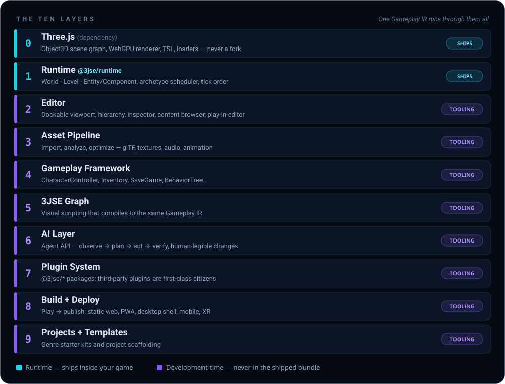

An open-source game engine and editor for the platform that will run the next billion games: the web.
Godot proved open source can be world-class. Unreal proved what the bar is — a real editor, expressive visual scripting, a deep gameplay library, and a pipeline from blank project to shipped game. 3JSE rebuilds that bar for the modern stack: WebGPU, TypeScript, and AI-assisted development.
Three.js already won the "does the web have a real renderer" argument. What the web has never had is everything a renderer needs around it to become a platform: an editor you can see your scene in, gameplay logic you don't hand-wire, an asset pipeline that isn't a shell script, and a way for a non-programmer — or an AI agent — to safely change how the game plays. That gap, not rendering quality, is what 3JSE closes.
"If Unreal Engine were invented today — for WebGPU, TypeScript, and AI-assisted development — what would it look like?" — docs/VISION.md, the founding question
And it is built around Three.js, never on top of a fork of it. Three.js stays a normal, upgradable dependency — if a project outgrows 3JSE's abstractions, it can drop to raw Three.js at any layer without losing anything.
Editor boots in a browser tab. Games ship as a URL, PWA, desktop app, mobile wrapper, or XR — no multi-gigabyte installer, no export farm.
No scripting-vs-engine split, no C++/Blueprints boundary. The components you write are the same ones the editor, the graph, and the AI use.
An Agent API exposes the editor's own command surface. Agents observe, plan, act, and verify by actually running the game — changes stay legible to humans.
Scenes, prefabs, and graphs are readable, deterministic, git-diffable text files — never a proprietary binary blob only the editor can open.
The engine itself is a curated set of official plugins on a small core. Third-party physics, terrain, or gameplay packages install exactly like official ones.
Three.js is a pinned dependency, not a vendored fork. Your engine upgrades like any other npm package — for the lifetime of your game.
Every engine forces you to pick a way of working — and silently maintains four parallel, drifting versions of your game. 3JSE rests on a single decision: one canonical, typed, serializable representation of what your game does — the 3JSE Gameplay IR.
Drag, place, inspect, sculpt. A desktop-class dockable GUI — for artists and level designers.
The same components, systems, and APIs the editor itself uses. No separate scripting language to learn.
Full visual scripting for gameplay — not a toy, not materials-only. Compiles to the same IR as hand-written TypeScript.
Structured primitives through the Agent API — never simulated mouse clicks. Plan, act, run the game, verify, hand back.
Four ways of working. Zero parallel versions. The IR is the architectural spine — everything else hangs from it. Read the IR design →
We don't pretend the web out-renders Nanite. We win where the web wins decisively — and we say so.
| 3JSE | Godot | Unreal Engine | |
|---|---|---|---|
| Language | TypeScript — one language, everywhere | GDScript / C# | C++ + Blueprints |
| Editor boot | Instant — it's a web app | Seconds | Minutes |
| Project format | Readable, git-diffable text | Text scenes | Binary .uassets |
| Distribution | A URL — PWA, desktop, mobile, XR | Exported binaries | Multi-GB installers |
| AI-native | First-class Agent API | Emerging | Emerging |
| Visual scripting | 3JSE Graph — compiles to the same IR as code | VisualScript (deprecated) | Blueprints (excellent) |
| Rendering | WebGPU via Three.js — and honest about it | Vulkan / GLES3 | Nanite / Lumen — the ceiling |
| License | GPL-3.0, free software | MIT | Source-available, royalties |
Unreal's strengths — the editor, the scripting, the systems — are not tied to C++ or a desktop process model. They're tied to having all layers agree on one representation of a game. That's the part 3JSE rebuilds for the web.
Two of them ship in your game. The rest are tooling — and every layer reads and writes the same Gameplay IR.

Three.js is a dependency, never a fork. No subsystem reaches into internals; every project can drop to raw Three.js at any layer.
One IR, many frontends. TypeScript, 3JSE Graph, and AI agents compile to the same IR. No second, opaque execution engine.
Everything the editor can do, code can do. The editor is a GUI for the runtime's command API — not a separate authority.
Plugins are first-class. Official subsystems are just curated plugins on a small core; third-party packages install the same way.
Projects are software projects. Readable, deterministic files under version control — never a proprietary binary.
Built to be extended by AI. Every feature lands in a small, predictable set of places — a constraint, not a nicety.
Play, pause, inspect, modify, resume — live, in-process, no rebuild. Browser for quick edits and shared project links; Tauri desktop app for serious work. Games built with it never depend on the editor at runtime.
Live WebGPU render, gizmos, camera navigation, stats overlay.
Entity tree with prefab instances visually distinguished.
Schema-generated component editors, multi-edit diffing.
Assets — meshes, textures, audio, prefabs, graphs — tagged, searchable, thumbnailed.
Full-tab node canvas for gameplay logic.
Node editor compiling to Three.js TSL.
Embedded Monaco-class TypeScript with LSP.
Timeline, state machines, blend trees, skeleton view.
Collider gizmos, constraint authoring — Rapier under the hood.
Retained-mode layout canvas.
Frame timing by system, draw call, GPU pass.
Logs, warnings, errors — clickable to source, TS line or graph node.
Breakpoints, step, watch — across TypeScript and graphs.
The Agent API surface: observe → plan → act → verify.
Dependency-ordered, not calendar-ordered — each phase proves what the next one depends on.
De-risk the bets: IR round-trip, ECS-over-Object3D performance, editor shell.
Build a scene visually with zero hand-written code.
Components, prefabs, physics, input, saves, animation — a real game.
Visual scripting that compiles to the same IR as TypeScript.
The Agent API loop — an engine an AI can operate.
Terrain, cinematics, VFX graphs, navigation.
Templates, package sharing, multiplayer.
The full studio-grade suite — on the web platform.
The complete 24-document design manual — written to be read by humans and by the AI agents that will help build the engine.
Why 3JSE exists, the core bet, and what success looks like.
ARCHITECTURE.md🏛️Ten layers, six principles, one command surface.
GAMEPLAY_IR.md🧬The single representation every frontend compiles to.
EDITOR.md🖥️All 22 dockable panels, browser or Tauri, one codebase.
AI_AGENT_API.md🤖Observe → plan → act → verify. Trust tiers included.
ROADMAP.md🗺️Eight phases, dependency-ordered, from spikes to ecosystem.
24 documents, fully cross-linked, on one page. Physics, rendering, networking, the object model, Verse compatibility, the vendor registry — everything.
📖 Open the design manual